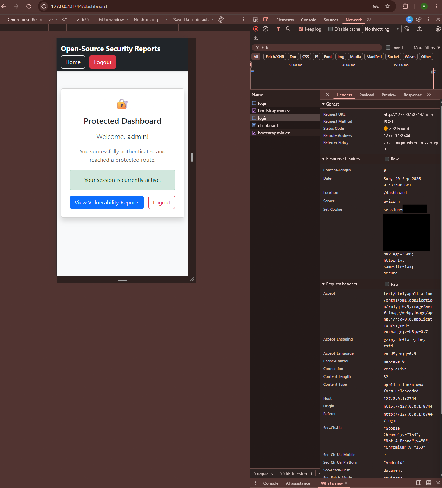
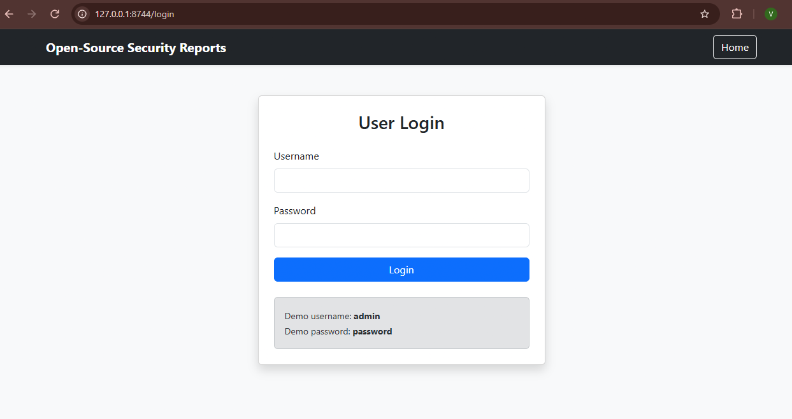
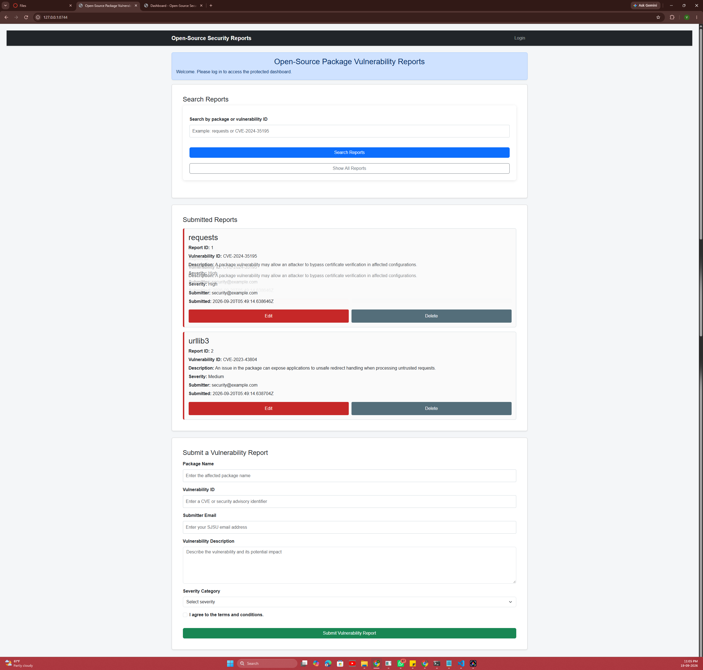
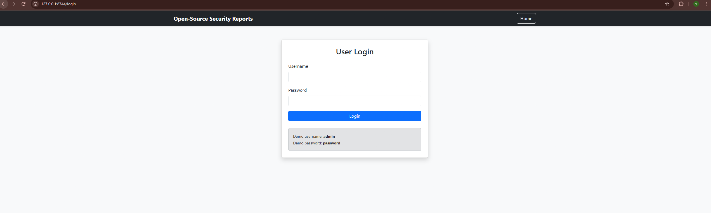
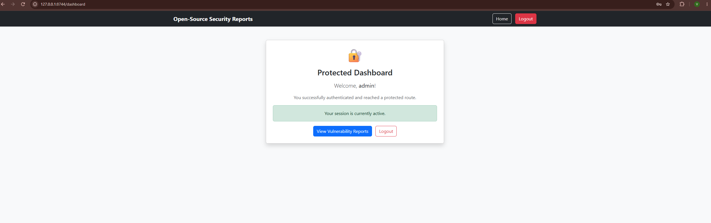
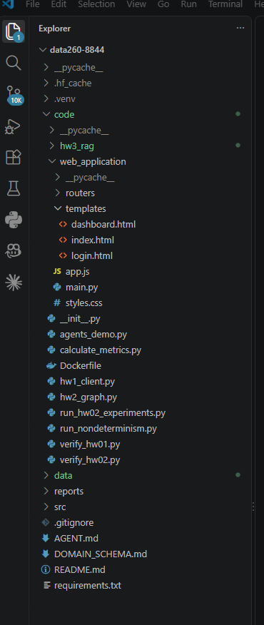
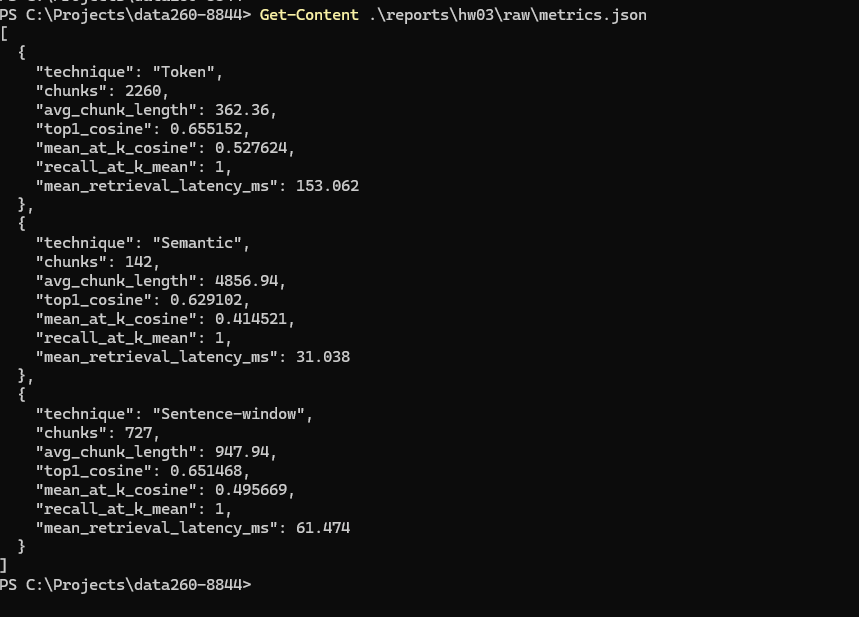
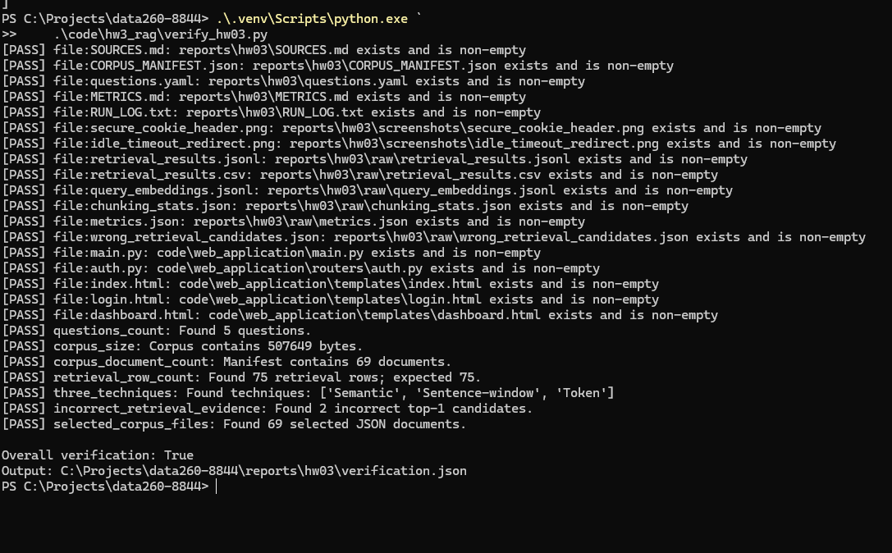

Student: Vrishin Dharmesh Kunnatham Parambath
Final GitHub repository:
https://github.com/Viki2183/data260-8844/tree/hw3
Course: DATA 260
Submission tag: hw3
Final tagged commit:d14ba5afe7d7586d220db8c9de320362c0bfaea8
| Value | Configuration |
|---|---|
| SID4 | 8844 |
| PORT_BASE | 8744 |
| PREFIX | s8844 |
| SEED | 8844 |
| VERIFY_SEED | 268844 |
| DOMAIN_ID | 4 |
| Assigned domain | Open-source package vulnerabilities |
| Python | 3.14.0 |
| Device | CPU |
| Embedding model | sentence-transformers/all-MiniLM-L6-v2 |
The first part of the homework required me to add a simple authentication system to the FastAPI application I had already built in HW1 and HW2. The application is designed around open-source package vulnerability reports. The goal was not to replace the earlier application, but to extend it with login, logout, session management, a protected dashboard, and Bootstrap styling.
The second part focused on retrieval-only RAG. I used public OSV PyPI vulnerability records as the corpus and compared three different ways of splitting documents before embedding and retrieval. The comparison measured both retrieval quality and practical characteristics such as chunk count, chunk length, and latency.
I kept the original FastAPI vulnerability-report API in
code/web_application/main.py. I added a separate router in
code/web_application/routers/auth.py and moved the HTML pages
into the templates directory. This structure keeps the authentication routes
separate from the vulnerability-report API routes.
| Route | Purpose | Expected behavior |
|---|---|---|
| / | Domain application home page | Shows the vulnerability-report interface and session-aware navigation |
| /login | Login page and credential validation | Valid credentials redirect to the dashboard; invalid credentials show an alert |
| /dashboard | Protected page | Only an active logged-in session can access it |
| /logout | Session destruction | Clears the session and redirects to the home page |
For this homework demonstration, I used the credentials
admin and password. In a production system,
credentials would be stored securely in a database and passwords would be
hashed. The important part for this assignment was demonstrating the route
behavior and session lifecycle.
if username == VALID_USERNAME and password == VALID_PASSWORD:
request.session["user"] = username
request.session["last_activity"] = time.time()
return RedirectResponse(
url="/dashboard",
status_code=HTTP_302_FOUND,
)Invalid credentials do not create a session. Instead, the login template is rendered again with an error message. The message appears as a Bootstrap danger alert.
return templates.TemplateResponse(
request=request,
name="login.html",
context={
"user": None,
"error": "Invalid username or password.",
},
status_code=401,
)Starlette's SessionMiddleware signs the browser session cookie. I configured a secret key, a one-hour cookie lifetime, SameSite protection, and the Secure flag. The Secure flag is important because it prevents the browser from sending the cookie over an ordinary insecure connection in normal deployments.
app.add_middleware(
SessionMiddleware,
secret_key=SECRET_KEY,
https_only=True,
same_site="lax",
max_age=3600,
)I captured the POST login response in Chrome DevTools. The response returned status 302 and redirected to the dashboard. The Set-Cookie header contained Max-Age, HttpOnly, SameSite=Lax, and Secure attributes. I redacted the session value in the screenshot because the value itself should not be shared.

In addition to the cookie lifetime, I implemented an application-level idle timeout. Each session stores the time of the user's latest activity. When a protected route is requested, the application compares the current time with the stored activity time. If the idle period is longer than 900 seconds, the session is cleared.
if elapsed_time > IDLE_TIMEOUT_SECONDS:
request.session.clear()
return None
request.session["last_activity"] = time.time()To test the behavior without waiting fifteen minutes, I temporarily changed the timeout to ten seconds. After logging in, I waited longer than ten seconds and then opened the dashboard directly. The application redirected me to the login page, showing that an expired session could not be reused.

I used Bootstrap navigation bars, cards, alerts, buttons, form controls, and responsive containers. The home page preserves the HW2 vulnerability report functionality while adding a session-aware navigation bar. The login page uses a centered card, and the dashboard uses a protected-route card that displays the authenticated username.




My assigned domain was open-source package vulnerabilities. I downloaded the official OSV PyPI vulnerability dump and extracted the JSON records locally. The full source contained 25,641 records, so I created a deterministic subset rather than embedding the entire dump. The selection required a non-empty summary, at least 800 characters of details, and affected package information.
The final local corpus contains 69 JSON records and 507,649 bytes. Each record retains advisory identifiers, aliases, summaries, detailed descriptions, affected packages, version ranges, references, severity information, and other OSV metadata. The source URL, access date, file sizes, and SHA-256 hashes are documented in SOURCES.md and CORPUS_MANIFEST.json.
I wrote five questions before generating retrieval results and committed questions.yaml first. This prevents changing the expected answers after seeing which chunks were retrieved. The questions cover SSRF, path traversal, remote code execution, denial of service, affected versions, and remediation.
For each question, I retrieved the top five results from each technique. Recall@5 was counted as successful when the expected source document appeared in the five retrieved source files.
| Technique | Configuration | Reason for using it |
|---|---|---|
| Token | Chunk size 256 tokens, overlap 40 tokens | Creates focused pieces with controlled overlap |
| Semantic | Buffer size 1, breakpoint percentile 95 | Attempts to place boundaries where the topic changes |
| Sentence-window | One sentence with a three-sentence surrounding window | Preserves local context around a sentence-level match |
All three pipelines used the same public
sentence-transformers/all-MiniLM-L6-v2 model. The model produced
384-dimensional vectors. Each technique used an in-memory SimpleVectorStore,
so the experiment did not require an external database or hosted vector store.
embed_model = HuggingFaceEmbedding(
model_name="sentence-transformers/all-MiniLM-L6-v2"
)
index = VectorStoreIndex(
nodes,
storage_context=storage_context,
embed_model=embed_model,
)
retriever = index.as_retriever(
similarity_top_k=5
)For every retrieved result, the program recorded the rank, LlamaIndex store score, explicitly recomputed cosine similarity, source filename, chunk length, preview text, vector shapes, and retrieval latency. The query embedding dimension and first eight values were also saved.

The values in this table are averages across the five evaluation questions. The individual cosine values discussed later belong to specific query results and are not table averages.
| Technique | Chunks | Average chunk length | Top-1 cosine | Mean@5 cosine | Recall@5 | Latency ms |
|---|---|---|---|---|---|---|
| Token | 2,260 | 362.36 | 0.655152 | 0.527624 | 1.000000 | 153.062 |
| Semantic | 142 | 4,856.94 | 0.629102 | 0.414521 | 1.000000 | 31.038 |
| Sentence-window | 727 | 947.94 | 0.651468 | 0.495669 | 1.000000 | 61.474 |
All three approaches retrieved the expected source document for every question within the top five results. This is why each technique has a Recall@5 mean of 1.0. That result is encouraging, but it does not mean the first result was always the best answer. The top result can still be a related advisory rather than the exact document required by the question.
Token chunking performed best overall on the similarity measurements. Its smaller chunks separated facts such as affected versions, fixed versions, and vulnerability mechanisms. The 40-token overlap also reduced the chance that an important statement would be split across two unrelated chunks.
Sentence-window chunking was close to token chunking. Its main advantage is context: a sentence-level match can be interpreted with nearby sentences. Semantic chunking was the fastest to search because it produced only 142 chunks, but those chunks were very large. A single embedding represented many different facts, which reduced the average similarity across the top five results.
The strongest incorrect result occurred for question q4, which asked why Open WebUI OAuth profile-picture processing could be exploited for SSRF. The expected document was GHSA-226f-f24g-524w.json, but Semantic chunking ranked GHSA-24c9-2m8q-qhmh.json first with a cosine similarity of 0.7008324.
The incorrect document was not random. It was a closely related Open WebUI SSRF advisory and shared terms such as Open WebUI, OAuth, profile pictures, and SSRF. The embedding therefore judged it highly similar. However, the question asked about the specific redirect-bypass behavior: the initial URL is validated, but the redirect destination is not revalidated. The related advisory did not contain that exact answer.
A similar incorrect top-1 result occurred with Token chunking at cosine similarity 0.67904045. This example shows why a high embedding score should not automatically be treated as proof that the retrieved chunk contains the requested answer.
I created a self-check script that verifies the application files, screenshots, corpus size, question count, manifest, raw retrieval outputs, three techniques, and incorrect-retrieval evidence. The verification passed all checks.

The repository includes exact instructions in reports/hw03/README.md. The experiment can be rerun with the project virtual environment, the local corpus, the fixed questions, and the saved scripts. The results are stored as JSONL, CSV, JSON metrics, and a timestamped run log.
I used an AI assistant to understand the homework requirements, plan the repository structure, explain authentication and retrieval concepts, draft starter code, and troubleshoot errors. I personally created the branch, downloaded and selected the corpus, wrote the questions, tested the FastAPI application, captured screenshots, ran the retrieval experiment, and reviewed the results.
One unsuitable suggestion was the first import of MetadataMode directly from llama_index.core. My installed LlamaIndex version required the import from llama_index.core.schema. I detected this from the ImportError produced by the smoke test. I also independently verified the Hugging Face cache problem when the model download failed with an access-denied error.
I fixed the import path and redirected the Hugging Face cache to a writable .hf_cache directory inside the repository. After those changes, the smoke test passed and the full retrieval experiment completed successfully. The longer AI-use explanation is also included in reports/hw03/AI_USE.md.
This homework connected application security with information retrieval. The authentication portion demonstrated how sessions, protected routes, secure cookies, and timeout checks work in a FastAPI application. The retrieval portion showed that chunking choices affect both the quality and speed of vector search.
For this vulnerability corpus, I consider Token chunking the strongest overall choice because it produced the highest top-1 and Mean@5 cosine scores while still achieving perfect Recall@5. Sentence-window chunking was a close alternative when preserving nearby context is especially important. Semantic chunking was the fastest, but its very large chunks made the similarity results less focused.
Supporting files, raw outputs, source documentation, screenshots, and verification results are committed in the GitHub repository.